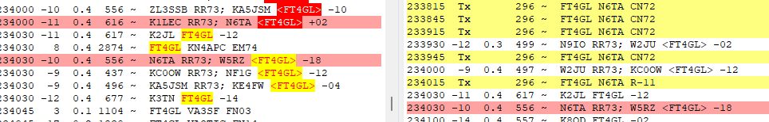

Skip is in and then out. I see good decodes and then blank for a while, like he went QRT.I missed about an hour of action so I have some work to do to get in there!AlOn Sat, May 25, 2024 at 4:26 PM Steve Jones via Chat <chat@ncdxc.org> wrote:Paul,
I just worked him around 4:00pm and he was -02 running multiple streams. I
got a -04 report running 100W. The skip is in!
73,
Steve
N6SJ
-----Original Message-----
From: Chat <chat-bounces@ncdxc.org> On Behalf Of Paul Booth via Chat
Sent: Saturday, May 25, 2024 1:27 PM
To: Paul N6PSE <pauln6pse@gmail.com>; NCDXC Discussion List <chat@ncdxc.org>
Subject: Re: [NCDXC Chat] DX Spot FT4GL Glorioso 24.923 FT8 1938 UTC
Worked as F/H this time. Gave me a -19 and I was running 1200w. Not to add
to the f/h vs. mshv discussion, I've used both and both work. the lower
frequencies that I would normally try for mshv were just plain full so I
avoided those; I chose a higher frequency that was previously occupied by a
station that just got a 73 from FT4GL and knowing that frequency was likely
to be clear, I used that. Didn't take too long. YMMV.
73, Paul, W6IBU
-----Original Message-----
From: Paul N6PSE <pauln6pse@gmail.com>
Sent: May 25, 2024 12:39 PM
To: NCDXC Discussion List <chat@ncdxc.org>
Subject: [NCDXC Chat] DX Spot FT4GL Glorioso 24.923 FT8 1938 UTC
He is Even, -16 signal.
Paul N6PSE
_______________________________________________
Chat mailing list
Chat@ncdxc.org
http://mail.ncdxc.org/mailman/listinfo/chat_ncdxc.org
_______________________________________________
Chat mailing list
Chat@ncdxc.org
http://mail.ncdxc.org/mailman/listinfo/chat_ncdxc.org
_______________________________________________
Chat mailing list
Chat@ncdxc.org
http://mail.ncdxc.org/mailman/listinfo/chat_ncdxc.org